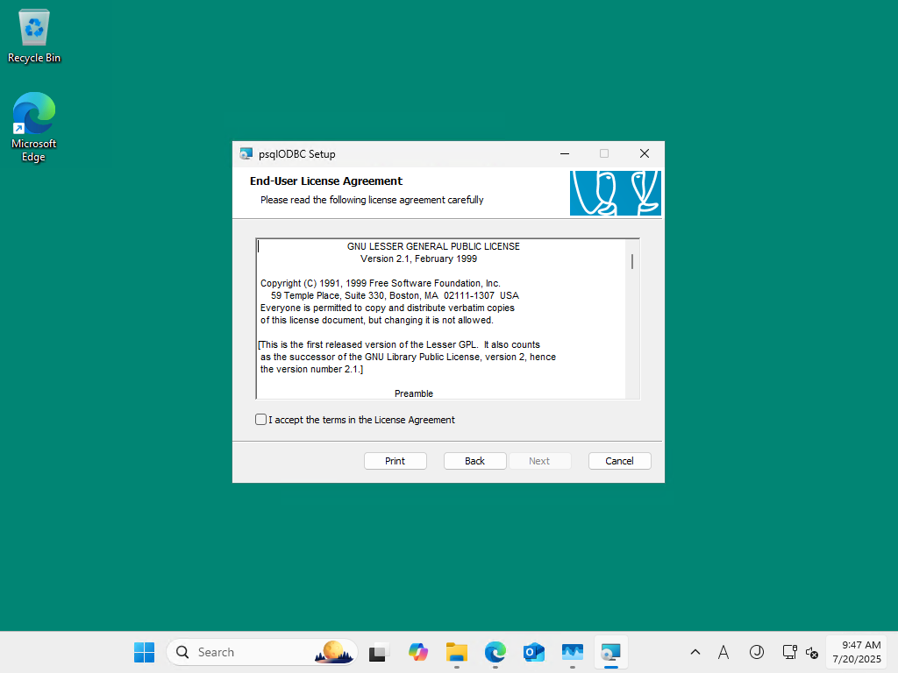
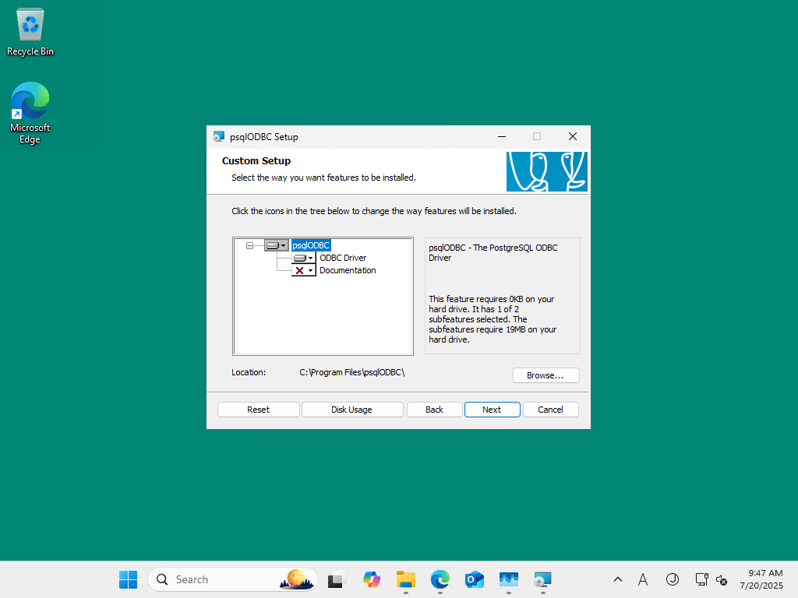
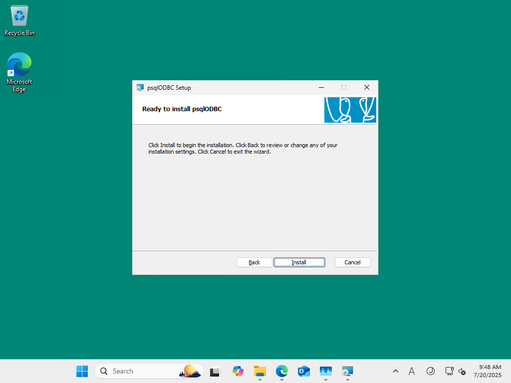
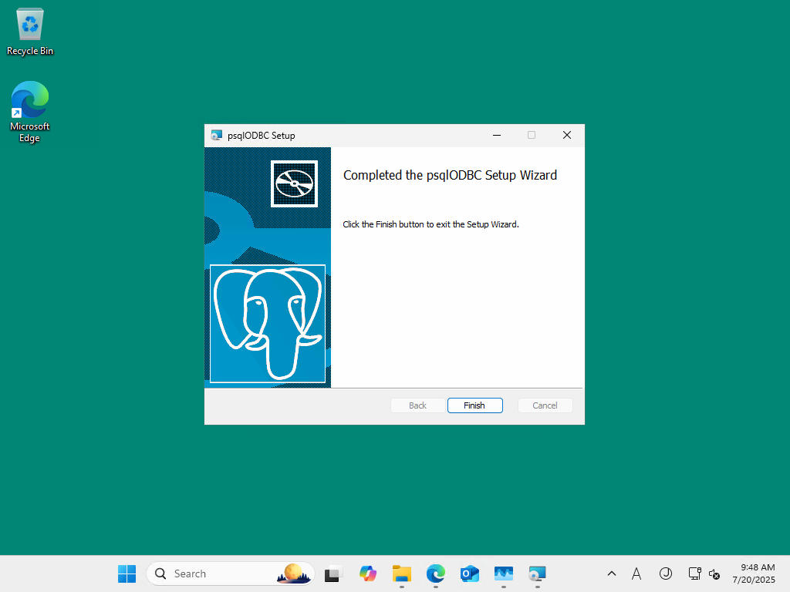

psqlodbc_arm64.msi (Arm64)
つぎのセットアップをダウンロードして、インストールしようとしています。
   インストールが完了しました。
つぎに ODBC データソースの設定をしていきます。
この Windows 11 の odbcad32 は 2 つです:
ODBC Data Source Administrator (32-bit)(x86 版)ODBC Data Source Administrator (64-bit)(Arm64 版)
ODBC Data Sources (64-bit) を起動し Add で PostgreSQL Unicode(arm64) を選択して Finish をクリック:
PostgreSQL Unicode ODBC Driver(psqlODBC) Setup 画面が起動しました:
接続情報を入力して Test をクリック。
Connection successful が表示されました。
正常に動作しているようです。
---------------------------
Connection Test
---------------------------
Connection successful
---------------------------
OK
---------------------------
OK をクリック、
Save をクリックして、設定を保存します。
Microsoft Access で確認します。
起動
テスト用のデータベースを開き
External Dataタブを開くNew Data Source→From Other Sources→ODBC Databaseを選択Link to the data source by creating a linked table.を選択しOKをクリック
Select Data Source 画面が表示されます:
PostgreSQL35W を選択して OK をクリックすると、エラーが発生しました。
Microsoft Access
ODBC--call failed.
Specified driver could not be loaded due to system error 193: (PostgreSQL Unicode(arm64), C:\Program Files\psqlODBC\1700\bin\podbc35w.dll), (#160)
想定通りの結果になりました。
Arm64EC (x64) バイナリーである MSACCESS.EXE は、
Arm64 バイナリーである psqlODBC との互換性がありません。
そのため psqlODBC のロードに失敗しました。